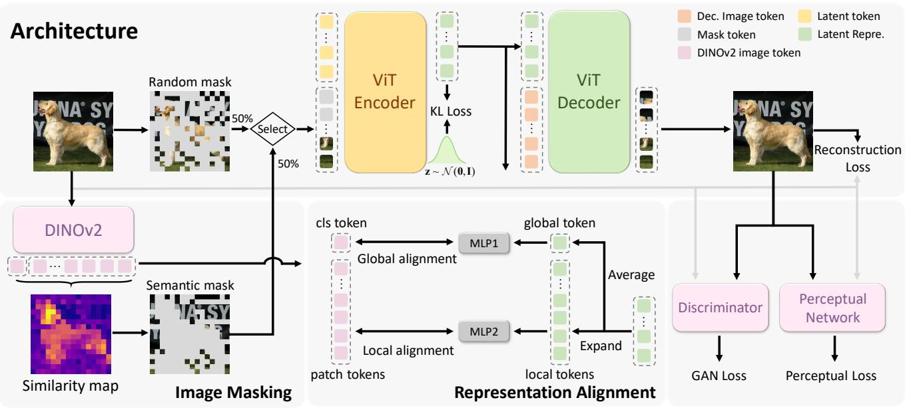

今日主线 · arXiv + CVPR 2026 Day 3
From Static to Dynamic：冻结 image-pretrained encoder，只学轻量投影并同时优化时序一致性与跨视频语义分离，直接切中视频表征迁移
冻结 image-pretrained encoder，只学轻量投影并同时优化时序一致性与跨视频语义分离，直接切中视频表征迁移。

冻结 image-pretrained encoder，只学轻量投影并同时优化时序一致性与跨视频语义分离，直接切中视频表征迁移。
P0
高相关；详见方法、贡献和实验边界。
方法：冻结 image-pretrained encoder，只学轻量投影并同时优化时序一致性与跨视频语义分离，直接切中视频表征迁移
 P0
P0
高相关；详见方法、贡献和实验边界。
方法：多尺度语言对齐 video tokenizer 同时提升重建、生成和 zero-shot 视频理解，是今天最值得跟的 tokenization 工作

P0高相关；详见方法、贡献和实验边界。
方法：用 masking 与 DINO-guided semantic masking 防止连续 tokenizer posterior collapse，对紧凑图像 latent 表征很关键
 P1
P1
高相关；详见方法、贡献和实验边界。
方法：从频率角度解释高维 autoencoder latent 的生成困难，并提出不改 autoencoder 的 FreqWarm 训练策略
 P1
P1
高相关；详见方法、贡献和实验边界。
方法：用普通视频生成点云再做 3D SSL，给“视频作为 3D 表征预训练数据源”提供强证据